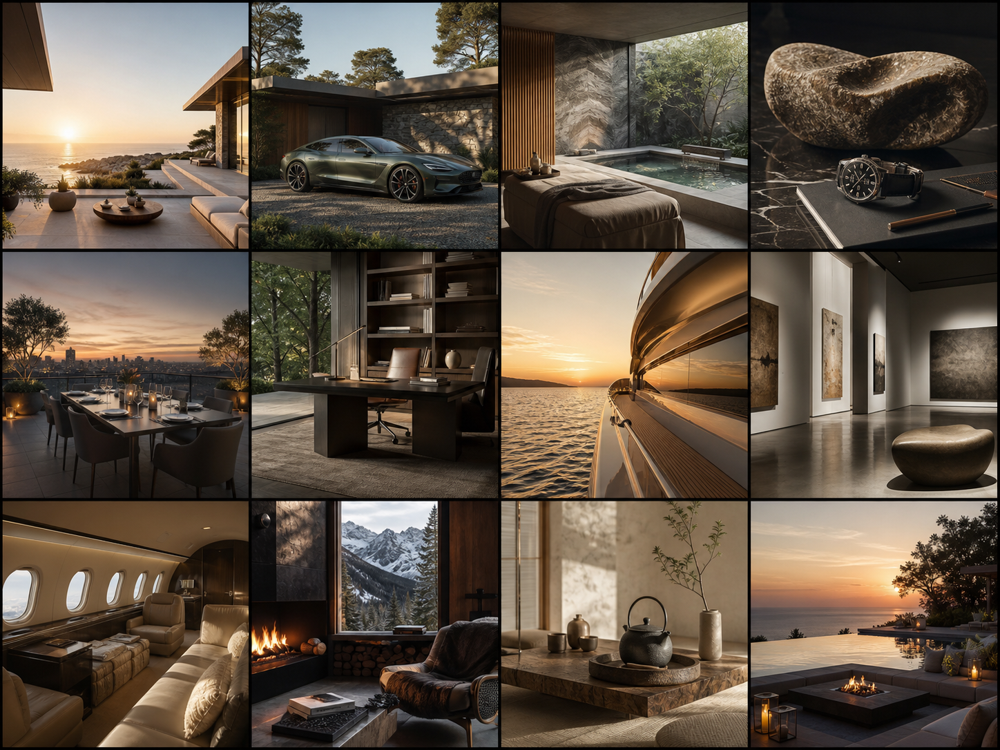

When a home starts to understand you
The next generation of luxury is not louder technology. It is a home that anticipates needs, protects quiet and makes every room feel intuitively personal.
Explore AI technologyASARK Blog
Notes on artificial intelligence, future architecture, sensory interiors and the changing language of luxury.

The next generation of luxury is not louder technology. It is a home that anticipates needs, protects quiet and makes every room feel intuitively personal.
Explore AI technology
AI can accelerate exploration, but the most memorable spaces will still be guided by place, climate and human feeling.
View related concept →
Luxury often begins with subtraction: better light, fewer distractions and materials that reward close attention.
View related concept →
Access, time, privacy and meaningful experiences are replacing excess as the strongest signals of modern luxury.
View related concept →